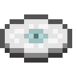
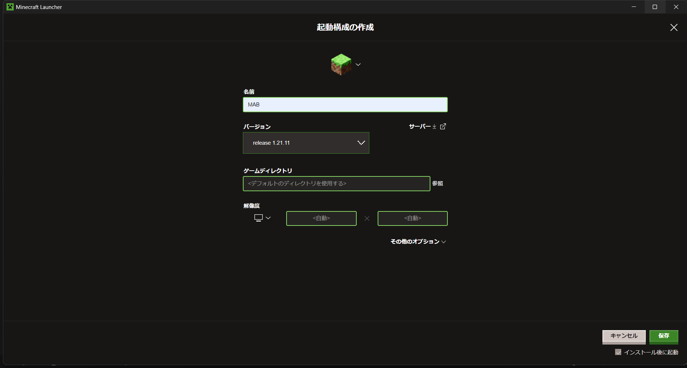
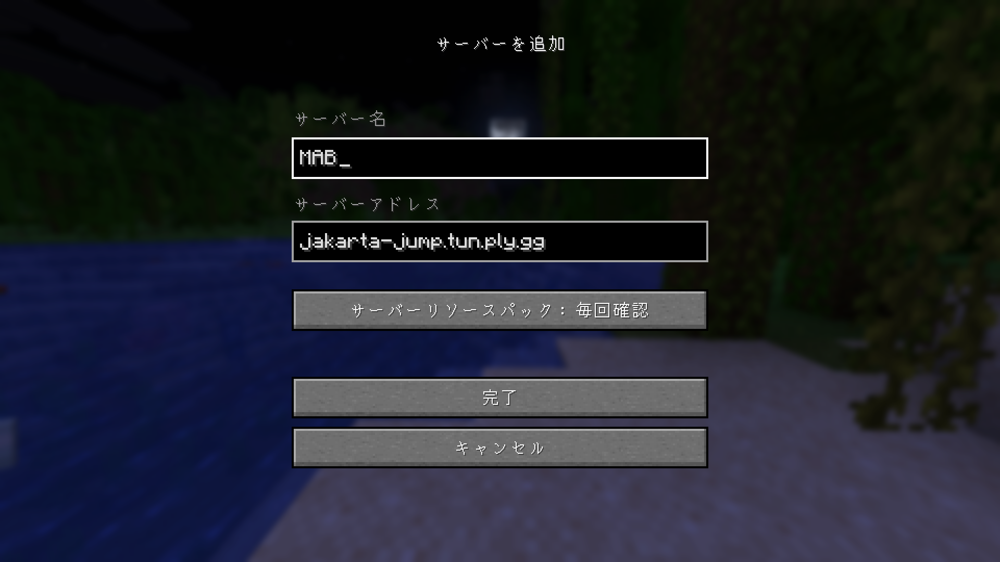
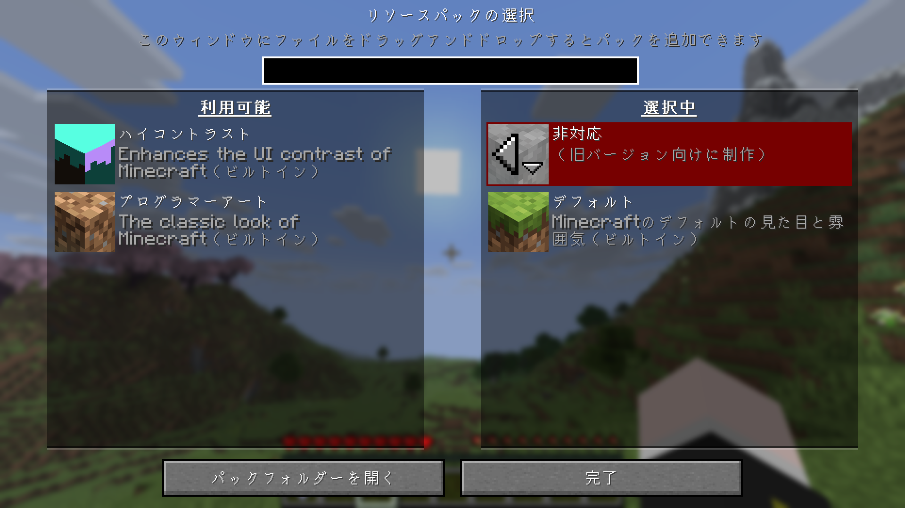

更新履歴
- [2026.09.03] MAB_ver1.4.0を公開しました(射撃訓練場の追加,「模倣」の仕様修正, 地形の修正, その他バグ修正)
- [2026.09.01] サーバーWikiを公開しました。
はじめに
このサイトは、東野琉之介が考案・開発したマインクラフトの自作プラグインと、それを導入したマルチプレイゲームサーバーである
【麻雀同好会異能力戦線：MAB】の公式Wikiです。
このゲームはルールや能力の詳細な仕様を、文章量・情報量削減のためにゲーム内で確認できないよう省略しています。
したがって「MAB」をプレイする前やプレイ中などに、この公式Wikiを確認することを強くお勧めします。
また、ルールや能力の仕様はアップデートにより予告なく変更されることが多いため「更新履歴」を確認しておくこともお勧めします。
(P.S. 実はこのサイトには小ネタが仕組んであります。暇なときにでも探してみてネ)
動機・目的
麻雀同好会と遊んでいたレンタルマイクラマルチサーバーの期限が切れてから数カ月が経ったとき。
「メンバーと通話しながら気軽にみんなで遊べるゲームが欲しいな～」と常々思っていた僕は、どうせならプログラミングの知識を活かして「マインクラフトで、異能バトル漫画風なバトロワゲームの自作プラグインを作ればおもろいのでは？」
と思い立ち、制作を進めていくことを決めました。
そこから、マイクラ公式の大規模アプデに振り回されたり、そもそも学生生活が忙しすぎたりなど紆余曲折を経て、生成AIフル活用により正式実装レベルにまでこぎつけることができました。
（Special Thanks：良きデバッグテストプレイヤー「かえるこうはい」）
コンセプト
このゲームのコンセプトは「弓 × 異能 × バトロワ」のマイクラプラグイン。
お互いの持つ異能を駆使しながら、弓矢でヘルスを削り合い、最後の1人になるまで生き残るバトロワサーバー。
ただ、麻雀同好会はメンバーが自分を含めて最大でも5人であるため、異能を駆使したバトロワを十分に楽しめつつ、1ゲームはそこまで長引かないようなカジュアルなゲームシステムを目指しました。
（ちなみに、ゲームタイトルは「麻雀同好会異能力戦線」の英名である「Mahjang-club Ability Battle-royale」の頭文字をとって「MAB」としている。 少人数の仲間内だけで遊ぶゲームということで、「仲のいい友達」という意味のマブと音が一緒であり、かつ非常にシンプルなネーミングなのでプログラミング的にも記述コストが低くお気に入り）
異能（アビリティ）データ一覧
用語説明：
【No.】：内部処理に必要な異能固有のナンバリング。
たいていは東野琉之介が異能の「熟語」と「パッシブ」「アクティブ」の原案を決定した順番に数字が振られており、特に深い意味はない。
【異能名】：
その異能の異能効果に応じた「二字熟語」が割り当てられている。
一目でどんな効果か想像できて(主観)、奇を衒いすぎずシンプルで(主観)、それでいてカッコいい熟語(超主観)という基準に基づいて命名されている。
【パッシブ】：
「パッシブ」は一般に、その異能力者が何かしら特定の操作を行わずとも、常に発動することのできる能力のことをさす。異能によっては必ずしも常に発動するわけではない。
【アクティブ】：
「アクティブ」は一般に、その異能力者が何かしら特定の操作を行うことで、任意に発動することのできる能力のことをさす。多くの場合「アクティブ」の能力にはクールダウンが発生する。
異能によっては必ずしも任意に発動するわけではない。
No.01
【疾風】

- 常に移動速度が通常の1.5倍になる。
- 走り続けている間、1秒毎に1ずつ「疾風ゲージ」が増加していく。
- 走っていない間、0.5秒毎に1ずつ「疾風ゲージ」が減少していく。
- 「疾風ゲージ」は最大15まで増加する。
- 「疾風ゲージ」が15の状態の時「颯(ハヤテ)」を纏う。
- 「颯」を纏っている間、一度だけ被ダメージを0にする。
- 一度被ダメージを受けると「颯」は解除され「疾風ゲージ」が0にリセットされる。
No.02 【浮遊】
- 常に跳躍力が通常の2倍になる。
- 空中でジャンプキーを押すことでさらに飛び上がることができる。
- 「スカイウォーク」によって飛び上がった後、再度「スカイウォーク」を発動するには一度地面に着地する必要がある。
No.03 【転移】
- 1ゲームに一度だけ、残り体力が2ハート以下になった際に、収縮エリア外を除いたバトルフィールド上のランダムな座標へ転送される。
- しゃがみながら矢を放つことで、その着弾地点にテレポートする。
No.04 【隠密】
- メインハンドに何も持っていない状態のとき、完全に透明化する。
- しゃがみながら矢を放つと、その矢によってダメージを与えた他プレイヤーに2秒間の盲目効果を付与する。
- 「忍法目眩まし」を発動してから、再度「忍法目眩まし」を発動可能になるまで8秒間のクールダウンが発生する。
No.05
【再生】

- 2秒毎に0.5ハート分の自動回復が付与される。
- 残り体力が2ハート以下になった際に、収縮エリア外を除いたバトルフィールド上のランダムな座標へ転送され、同時に体力が即時全回復する。
- 「リバイブ」を発動してから、再度「リバイブ」を発動可能になるまで300秒間のクールダウンが発生する。
No.06
【精密】

- 放った矢が速度を保ったまま、重力を無視して直進する。
- 放った矢は10秒で消滅する。
- 弓矢を構えながら5秒間しゃがみ続けることで、「チャージショット」を放つことができる。
- 「チャージショット」では与ダメージがハート3個分である即着弾を放つことができる。
- 「チャージショット」の射程距離は100ブロックである。
No.07
【分析】

- 常に画面右側に「自身から最も近い他プレイヤーの情報」が表示されている。
- 「自身から最も近い他プレイヤーの情報」として表示される情報は「他プレイヤーの名前」「異能名」「現在体力」「自身からの相対距離」である。
No.08
【勇者】

- 矢の与ダメージがハート1個分になる。
- 「聖剣」を所持している。
- 「聖剣」での与ダメージがハート2個分になる。
- 「聖剣」を手に持っている間、移動速度が通常の1.2倍になる。
- 他プレイヤーを「聖剣」で倒すと体力が即時全回復する。
- 他プレイヤーを倒したことがある他プレイヤーに対して「聖剣」の与ダメージが通常の2倍になる。
No.09
【吸血】

- 他プレイヤーにダメージを与える毎に「吸血ゲージ」が1ずつ増加していく。
- 「吸血ゲージ」は最大10まで増加する。
- 「ヴァンパイアファング」を所持している。
- 「ヴァンパイアファング」を使用することで「吸血ゲージ」を全て消費し「変身状態」となる。
- 「変身状態」では消費した「吸血ゲージ」の値に応じた能力を解放する。
消費値1～4：移動速度と跳躍力が通常の1.5倍になる。
消費値5～9：消費値1～4状態の能力に加えて、体力の最大値が通常の2倍になり、即時回復する。
消費値10：消費値5～9状態の能力に加えて、移動速度がさらに2倍になり、跳躍力がさらに4倍になり、近接での与ダメージがハート2個分になり、エリトラを自動的に装備する。
- いずれの能力も効果時間は20秒間であり、能力使用後は、再度「ヴァンパイアファング」を使用可能になるまで180秒間のクールダウンが発生する。
No.10
【爆破】

- 放った矢が赤色に発光する。
- 矢の与ダメージがハート3個分になる。
- しゃがむ毎に足元に爆発を発生させ、目線の方向に推進力を得ることができる。
- 赤色の矢の爆発は矢を中心とした半径3ブロック範囲内にハート0.5個分のダメージを与える。
- しゃがむ毎に、自らは0.5ハート分のダメージを受ける。
- しゃがむことで着弾地点に残留している赤色の矢が爆発する。
No.11
【決闘】

- 「デュエル・フィールド」にいる全てのプレイヤーの体力の最大値をハート5個分に固定する。
- 「デュエル・フィールド」にいる全てのプレイヤーの全ての異能効果を無効化する。ただし「パッシブ：正々堂々」に限りその対象ではない。
- 「デュエル・フィールド」にいる全てのプレイヤーの全ての所持アイテムを一時的に削除する。
- 「デュエル・フィールド」にいる全てのプレイヤーの近接での与ダメージを通常の2倍に上昇させる。
- 「デュエル・フィールド」から帰還したプレイヤーに一時的に削除していた所持アイテムを返却する。
- 近接でダメージを与えた他プレイヤーを「デュエル・フィールド」と呼ばれる専用のフィールドに転送し、同時に自身も「デュエル・フィールド」に転送する。
- 「デュエル・フィールド」にいるプレイヤーのうちどちらか一方が倒れるか、転送から60秒間が経過すると「デュエル・フィールド」にいる全てのプレイヤーが収縮エリア外を除いたバトルフィールド上のランダムな座標へ転送される。
- 一度「アクティブ：決闘者の矜持」を発動してから、再度「アクティブ：決闘者の矜持」を発動するまで300秒間のクールダウンが発生する。
No.12
【削除】

- 「ブラックノート」を所持している。
- 体力の最大値が通常の0.5倍になる。
- 常に画面右側に「自身から最も近い他プレイヤーの異能名」が表示される。
- 「ブラックノート」を使用すると、ゲームに参加している他プレイヤーの一覧を参照することができる。
- プレイヤーの一覧から任意の1人を選択するとMABに登場する全ての異能名が表示され、その中から任意の異能を1つ選択することができる。
- もし選択した異能が、選択したプレイヤーの異能と一致していた場合、選択された他プレイヤーは40秒後に「パッシブ」と「アクティブ」の異能効果を無効化される。
- 「アクティブ：新世界の神」によって無効化された異能効果は、そのゲーム中に再度有効化されることはない。
- 異能の選択をゲーム中で計4回間違えるとそれ以降「ブラックノート」を使用することができなくなる。
- 「ブラックノート」をもって6秒間しゃがみ続けると、「特殊パッシブ：死神の目」を解放することができる。
No.13
【豪運】

- 残り体力が2ハート以下になった際に、7％の確率で収縮エリア外を除いたバトルフィールド上のランダムな座標へ転送され、同時に体力が即時全回復する。
- 攻撃をする毎に77％の確率で矢の与ダメージがハート3個分になる。
- 攻撃を受ける毎に77％の確率で被ダメージが0.75倍になる。
No.14
【模倣】

- 他プレイヤーにダメージを与える毎に「アビリティディスク」を1枚取得する。
- 「アビリティディスク」には「アビリティディスク：疾風」のようにダメージを与えた他プレイヤーの異能名がついている。
- 同じ異能名をもつ「アビリティディスク」は同時に3枚まで所持することができる。
- 「アビリティディスク」を使用することで、その「アビリティディスク」がもつ異能名の「パッシブ」「アクティブ」の異能効果を30秒間使用することができる。
- 「アビリティディスク」を使用すると、模倣した「パッシブ」「アクティブ」の異能効果に必要な専用アイテムも30秒間配布される。
- ただし、インベントリに専用アイテム分の空きがなかった場合、専用アイテムはその場にドロップする。
- 「アビリティディスク」は一度使用すると一枚消滅する。
- 「アビリティディスク」を使用してから、再度「アビリティディスク」を使用可能になるまで30秒間のクールダウンが発生する。
No.15
【商人】

- ゲーム開始から5秒毎に「コイン」が1ずつ増加していく。
- 「DFD(デイリーファストデバイス)」を所持している。
- 「DFD」を使用することで「マーケット」を参照することができる。
- 「マーケット」にはゲーム中のチェストから入手できる全てのアイテムに加え、専用の特別なアイテムである「マーケットアイテム」が表示されている。
- それぞれのアイテムには「値段」がつけられており「値段」と同数の「コイン」と引き換えることで、任意のアイテムを取得することができる。
- 全ての「マーケットアイテム」は一度使用すると消滅するが、「値段」と同数の「コイン」があれば「マーケット」から何度でも引き換えることができる。
- なお「マーケット」で引き換えたアイテムは、他プレイヤーも使用することができる。
- 「ゾーンエネルギー」：30コイン 使用することで、15秒間移動速度と跳躍力が1.5倍になり、1秒毎に1ハート分の自動回復が付与される。
- 「バウンティ・ポスター」：45コイン 使用することで、ゲームに参加している他プレイヤーの一覧が参照できる。
- 「ポータブルテレポーター」：45コイン 使用することで、収縮エリア外を除いたバトルフィールド上のランダムな座標に転送することができる。
- 「煙玉」：60コイン 使用することで、10秒間完全に透明化する。
- 「ガン・スミス・チケット」：60コイン 購入することで自身の弓を「精密」の異能効果と同じ効果を持つ弓に強化できる。
- 「エクスカリバー・レプリカ」：60コイン 他プレイヤーにハート2個分のダメージを与える剣。
- 「ファーストボム」：60コイン 購入することで自身の放つ矢を「爆破」の異能効果と同じ効果を持つ矢に強化できる。
- 「タイマーリセッター」：60コイン 使用することで、自身を中心とした半径15ブロック以内に存在する他プレイヤーの異能効果に強制的なクールダウンを発生させる。
- 「銀の弾丸」：90コイン 「吸血」の異能力者に対して特攻を持つ矢が一発だけ装填されたクロスボウ。
- 「ノートの切れ端」：90コイン 「削除」の異能力者がもつ「ブラックノート」と同じ異能効果をもつアイテム。
- 「神殺しの槍」：90コイン 「聖域」の異能力者に対して特攻を持つトライデント。
「マーケットアイテム」一覧
その一覧から任意の他プレイヤーを1人選択することで、そのプレイヤーを「指名手配」することができる。
「指名手配」してから60秒間のうちにそのプレイヤーを倒すことで、145コインを入手する。
なお「ガン・スミス・チケット」によって強化された弓は「チャージショット」を放つまでのしゃがみ時間が8秒間となっている。
なお「ファーストボム」によって強化された矢は通常の与ダメージであり、またしゃがむ毎にハート0.5個分のダメージを受けるが、目線の先の推進力は得ない。
同時に、自らの異能効果のクールダウンが即座に0秒になる。
使用することで通常の矢のように「銀の弾丸」を放つことができる。
「銀の弾丸」は「ヴァンパイアファング」を使用した「変身状態」の「吸血」の異能力者に対してハート66個分のダメージを与える。
使用することでゲームに参加している他プレイヤーの一覧を参照することができ、プレイヤーの一覧から任意の1人を選択するとMABに登場する全ての異能名が表示され、
その中から任意の異能を1つ選択することができる。もし選択した異能が、選択したプレイヤーの異能と一致していた場合、
選択された他プレイヤーは40秒後に「パッシブ」と「アクティブ」の異能効果を無効化される。
使用することで通常のトライデントのように「神殺しの槍」を一度だけ放つことができる。
「神殺しの槍」は「聖域」の異能力者に対してハート99個分のダメージを与える。
「神殺しの槍」は「聖域」の異能効果を無効化し、「アクティブ：絶対恐怖領域」によって展開される「心の壁」の影響を一切受けない。
No.16 【逆境】
- 体力が残り3ハート以下になると、その時点から15秒間、移動速度と跳躍力、矢と近接の与ダメージが通常の2倍になる。
- 体力が残り3ハート以下になると、その時点から15秒間、全ての被ダメージを無効化する。
- 体力が残り3ハート以下になってから15秒間のうちに他プレイヤーを1人も倒すことができなければ、その時点で即死する。
No.17
【賭博】

- 「賽と器」を所持している。
- 自らを中心とした半径60ブロック以内に「豪運」の異能力者が存在する場合「賽と器」を使用して表示される数字の出目が「777」に固定される。
- 「賽と器」を使用することで、画面に3つ並んだ1～6のランダムな数字を表示する。
- それらの3つの数字の出目によって異なる能力を解放する。 ピン・ニゾウ・サンタ：60秒間、移動速度と跳躍力が通常の1.5倍になる。
- 「賽と器」を使用してから、再度「賽と器」を使用可能になるまで30秒間のクールダウンが発生する。
ヨツヤ・ゴケ・ロッポウ：60秒間、与ダメージが通常の1.5倍、被ダメージが通常の0.75倍になる。
シゴロ：最大体力がハート5個分増加し、体力が即時全回復する。
アラシ：60秒間、移動速度と跳躍力、与ダメージが通常の2倍、被ダメージが通常の0.5倍になる。
ピンゾロ：60秒間、「アラシ」の効果に加えてダメージを与えた他プレイヤーの移動速度を通常の0.5倍にし、そのプレイヤーを発光させる。
ヒフミ：30秒間、移動速度と跳躍力が通常の0.3倍になる。
スリーセブン：77秒間、移動速度と素手での与ダメージが通常の7倍になる。
No.18 【聖域】
- 「生命の実」を所持している。
- ゲーム開始時に「活動時間」が91.3秒に設定される。
- 「生命の実」を使用することで「心の壁」を展開することができる。
- 「心の壁」を展開している間、全ての被ダメージを無効化する。
- 「心の壁」を展開している間、自身を中心とした半径3ブロック内に他プレイヤーは放った矢や異能効果を含め一切干渉することができない。
- 「生命の実」を再度使用することで「心の壁」は任意のタイミングで解除することができる。
- 「心の壁」を展開している間、「活動時間」が展開時間に対応して減少していく。
- 「活動時間」が0秒になると強制的に「心の壁」は解除され、再度「生命の実」を使用することができなくなる。
No.19
【念視】

- ゲーム開始から60秒経つ毎に、全ての他プレイヤーの座標に「残留思念」を発生させる。
- 「残留思念」は「念視」の異能力者以外には見ることができない。
- 「残留思念」は発生してから経過時間に応じて色が変わり、90秒後に消滅する。 0～30秒：赤色
31～60秒：橙色
61～90秒：青色
- 5秒間しゃがみ続けた後、そのまましゃがみ続けている間、全ての他プレイヤーに光の柱が立ち、他プレイヤーの方角に光線が伸びる。
- 他プレイヤーの方角に伸びる光線は他プレイヤーとの相対距離によって色が変化する。
- この光の柱と光線は「念視」の異能力者以外に見ることはできない。
No.20 【速射】
- 弓を最大まで引ききる時間が通常の0.5倍である。
- 50%の確率で矢を消費しない。
- しゃがみながら弓を引き続けている間、矢を連射し続ける。
No.21
【採掘】

- 「採掘者の心」を所持している。
- 「採掘者の心」を使用することで、60秒間「サバイバルモード」になることができる。
- 「採掘者の心」を使用することで、「土ブロック」が64個と「採掘者のツルハシ」が付与される。
- 「サバイバルモード」では地形の破壊やブロックの設置が可能となる。
- 「サバイバルモード」が解除されると、設置したブロックは破壊され、破壊したブロックは元に戻り、「採掘者のツルハシ」は回収される。
- 「採掘者の心」を使用してから、再度「採掘者の心」を使用可能になるまで120秒間のクールダウンが発生する。
サーバー参加手順
-
「Minecraftのバージョンを合わせる」
本サーバーは「Java版 1.21.11 release」で稼働しています。
-
「Minecraftのランチャーから起動構成を設定する」
「Java版 1.21.11 release」のマルチプレイに参加するための起動構成を設定します。
「起動構成」を選択したのち「新規作成」から下記画像の画面で設定します。
設定する必要があるのは「バージョン」のみ。「名前」「アイコン」などはお好みです。
-
「サーバーアドレスの追加」
「マルチプレイ」から「サーバーを追加」を選択し、以下のIPアドレスを入力してください。
設定する必要があるのは「サーバーアドレス」のみ。「サーバー名」はお好みです。
jakarta-jump.tun.ply.gg

-
「テクスチャファイルの配置」
（Windowsの場合）PCの「エクスプローラー」「C:\Users\(ユーザ名)\AppData\Roaming\.minecraft\resourcepacks」へ以下のZipファイルをダウンロード後に配置してください。
Zipファイルを展開する必要はありませんが、「Appdataフォルダ」や「.minecraftフォルダ」はデフォルトで非表示になっている可能性があります。
(非表示になっていたり、場所がわからない場合は「.minecraft 場所」とでもググってください)
◇テクスチャファイルをダウンロードする -
「ゲーム内でのテクスチャファイルの適用」
MABサーバーに参加したら「設定」から「リソースパック」を開き、画面左側の「MAB_pack.zip」を右側の「選択中」に来るようにクリックして「完了」

-
※このサーバーは私のPC上のワールドデータをホスティングしてるので常時開放ではありません。
質問があれば東野まで気軽にどうぞ。
ゲーム進行
- サーバー参加後、「ロビー」にてゲームの開始を待機する。(このとき任意で「異能予約」をすることができる)
- ゲーム開始後、予約した異能 or ランダムに抽選された異能が各プレイヤーに与えられる。(異能は重複しない)
- 弓矢や近接・異能を駆使して他プレイヤーのヘルスをゼロに減らし、最後のプレイヤーになるまで生き残れば勝利
- 1ゲーム約13分想定であり、15分時点で強制終了する(決着がついていない場合、引き分けとなる)
基本仕様
- ゲーム開始後、全プレイヤーに「弓」「矢3本」「エリアコンパス」が配布される
- 「エリアコンパス」は常に収縮エリアの中心を差している
- 「収縮エリア」のダメージは毎秒ハート0.5個分(フェーズごとに不変)
- プレイヤーの画面右側に表示されている「MABパネル」には「異能のCD(クールダウン)」「残り人数」「現在地の収縮エリア状況」が表示されている
- 全プレイヤーの初期体力はハート10個分
- 全プレイヤーの初期与ダメージは弓：ハート2個分、近接：ハート0.5個分
- ただし、上記初期ステータスは各プレイヤーの異能・アイテム使用状況によってはその限りでない。
- 弓矢や近接・異能を駆使して他プレイヤーのヘルスをゼロに減らし、最後のプレイヤーになるまで生き残れば勝利
- 1ゲーム約13分想定であり、15分時点で強制終了する(決着がついていない場合、引き分けとなる)
アイテム仕様
- 矢：
なんの変哲もないただの矢。地面や壁に刺さっているものは再回収できない - 包帯：
チェストから手に入る回復アイテム。回復量はハート1個分で使用時間は1.2秒間 - 医療キット：
チェストから手に入る回復アイテム。回復量はハート4個分で使用時間は4.5秒間 - シールド：
チェストから手に入る強化アイテム。使用によりハート2個分の使い捨ての体力を得る。使用時間は3.0秒間
重ねて使用でき、ハート10個分まで増やせる。上限に達している場合は使用できない - 注射器：
チェストから手に入る強化アイテム。使用によりハート2個分の最大体力を得る。使用時間は4.0秒間
効果は試合終了まで持続し、重ねて使用するとハート10個分まで増やせる。上限に達している場合は使用できない - アドレナリン：
チェストから手に入る強化アイテム。使用により15秒間の移動速度1.4倍、跳躍力1.4倍、継続的な再生能力を得る。使用時間は2.5秒間